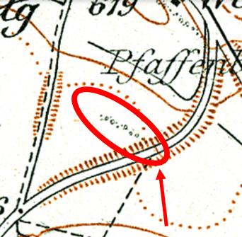

Das erste Treffen bei den Eichen hat stattgefunden.
Dabei konnten wir einige neue Fakten zusammentragen:
Auf der grossen Wiese, auf der die Überbauung «Brieglipark» entsteht, stehen mehrere alte Bäume, darunter drei wohl weit über 100-jährige, kerngesunde, mächtige Eichen. Diese Eichen sind Teil des Inventars der Landschaftsobjekte unserer Gemeinde (Nr. 274/2007) und damit – grundsätzlich – geschützt.
Das folgende Bild zeigt die entsprechende Seite im Inventar:
Die Briegli Park AG hat begonnen, auf dieser Wiese 13 Wohnblocks zu bauen. Zurzeit sind 8 Blocks fertiggestellt oder im Bau, fünf weitere sind noch geplant. Der Detailbebauungsplan wurde bereits 2013 publiziert. Mehrere Anwohner erhoben schon damals Einsprache , u.a. um die Bäume zu schützen. Alle Einsprachen wurden abgelehnt und der Detailbebauungsplan von der Gemeinde gutgeheissen.
Durch die Etappierung der Überbauung musste das Fällen der geschützten Bäume im Frühjahr 2021 mit dem jüngsten Baugesuch nochmals beantragt werden.
Jetzt wird es konkret: Die Eichen sollen gefällt werden.
Hier stehen die Eichen (Ausschnitt aus dem Zonenplan der Gemeinde Düdingen):
So soll gebaut werden (Grundbuchamt des Sensebezirks. Die Eichen «bedrohen» das Gebäude 7495):
Die Eichen müssen offenbar gefällt werden, weil sie auf einem leichten Geländevorsprung stehen, der abgetragen werden soll. Mit anderen Worten: Weil die Bewohner im Wohnblock nordöstlich der Eichen zu wenig Tageslicht erhalten, sollen die Eichen gefällt werden.
Ein weiteres Argument der Bauherrschaft lautet: Das Gebäude, das den drei Eichen am nächsten zu stehen kommen soll, soll eine unterirdische Autoeinstellhalle erhalten. Dadurch soll der Untergrund instabil werden, die Eichen müssen weichen.
Es ist leicht erkennbar, dass die Eichen durch eine etwas weitsichtigere Planung in die Überbauung hätten integriert werden können!
Gegen die Baubewilligung sind ungefähr 10 Einsprachen eingegangen. Die Gemeinde hat die Einsprachen ans Kantonale Bau- und Raumplanungsamt weitergeleitet, wo das Baugesuch zurzeit liegt.
Am 17. April hat bei den Eichen eine Ortsbegehung stattgefunden und die Interessensgemeinschaft «Alte Eichen retten» hat sich gebildet.
Die IG hat im Anschluss an das Treffen einen Brief ans Bau- und Raumplanungsamt des Kantons Freiburg verfasst. Darin bitten wir um ein Gespräch.
In den «Freiburger Nachrichten» sind bereits mehrere Leserbriefe veröffentlicht worden.
Karte von 2021
Karte von 1899 - Die Baumreihe ist klar erkennbar.
Aufgrund dieses Kartenausschnitts schätzen wir das Alter der Eichen auf klar über 120 Jahre. Die Bäume könnten aber auch noch viel älter sein. Die Seite «Baumportal.de» berechnet für eine Eiche mit 400 cm Stammumfang ein Alter von 315 Jahren!
Wir glauben, dass mit der Fällung dieser gesunden Bäume ein grosser Schaden entsteht, sowohl für die Natur als auch für die Bewohner unseres Dorfes.
Die Auswirkungen der menschenverursachten Klimaerwärmung zeichnen sich immer klarer ab, weltweit, aber auch bei uns zu Hause: Heissere, trockenere Sommer. Gleichzeitig werden durch die Bautätigkeit die Oberflächen zunehmend versiegelt, so dass sich die Böden leichter aufheizen. Ein Teufelskreis. 2019 hat der Düdinger Generalrat eine Resolution der Jungen Liste Düdingen verabschiedet, die die Ausrufung des Klimanotstands fordert. Zentrale Forderung: «Der Gemeinde- und der Generalrat sollen künftig bei jeglichen Geschäften die Auswirkungen auf das Klima prüfen (Quelle: Freiburger Nachrichten).» Die Eichen haben einen Stammumfang von über vier Metern und haben ein mächtiges Blätterdach. Sie bieten einen wirksamen Schutz vor Hitze und sorgen mit ihrem Wurzelwerk dafür, dass der Boden nicht austrocknet. Es ist unverständlich, dass die Gemeinde der Briegli Park AG eine Abholzungsbewilligung erteilen will.
Die von der Briegli Park AG versprochene Ersatzpflanzung ist völlig ungenügend, wie diese Gegenüberstellung zeigt:
Ersatzpflanzung im Brieglipark: Pflegeleichte Betonlandschaft - Wie soll hier ein gesunder Baum wachsen?
Fast doppelt so hoch wie der geplante Wohnblock: Zwei der drei gesunden Eichen, die gefällt werden sollen.
Im Laufe des Winters wurden in den Wäldern des Sensebezirks viele Buchen gefällt. Die Behörden argumentierten, dass die Buchen wegen der wasserarmen Sommer ausgetrocknet seien und aus Sicherheitsgründen gefällt werden müssten (Quelle: Mitteilungsblatt Dezember 2020: Sicherheitsfällungen im Sagerainwald). In diesem Kontext wurde wiederholt eine Baumart als besonders widerstandsfähig gegen die Folgen der Klimaerwärmung hervorgehoben: die Eiche.
Es ist völlig absurd, dass der Düdinger Gemeinderat die Abholzung dieser Bäume zulassen will.
Gegen verdichtetes Bauen in Düdingen ist nichts einzuwenden. Aber es muss erwartet werden können, dass eine Bauherrschaft die landschaftlichen Gegebenheiten respektiert. Wir fordern, dass der Gemeinderat umdenkt: Nicht die Bäume stehen den Bauplänen im Weg, sondern die Baupläne diesen gesunden Bäumen. Warum kann man nicht verlangen, dass diese für die Gemeinde wichtigen Landschaftsobjekte in die Siedlung integriert werden?
Letztlich geht es auf der Briegliwiese um Gewinnmaximierung. Bei der Ausnutzung des Geländes will die Briegli Park AG auf die geschützten Bäume keine Rücksicht nehmen. Das ist aber gesetzlich verlangt!
Das Gesetz über den Natur- und Landschaftsschutz (NatG) bezweckt u.a., die Vielfalt der Natur- und Landschaftsgüter zu bewahren und zu fördern. Es steht:
«Jede Person ist grundsätzlich verpflichtet – im privaten und öffentlichen Rahmen – Rücksicht auf Natur und Landschaft zu nehmen (Quelle: Gesetz über den Natur- und Landschaftsschutz, Artikel 2).»
«Die Organe von Staat und Gemeinden berücksichtigen systematisch die Interessen des Natur- und Landschaftsschutzes in ihren Tätigkeiten und dies bereits bei der Planung und Ausarbeitung von Projekten (Quelle: Gesetz über den Natur- und Landschaftsschutz, Artikel 3).»
Wir fragen uns: Wie konnte es geschehen, dass die zuständigen Behörden den Detailbebauungsplan, der all diesen Grundsätzen klar widerspricht, trotz Einsprachen bewilligten?
Im Planungs- und Baureglement der Gemeinde steht ausdrücklich:
«Der natürliche Geländeverlauf muss ablesbar bleiben (Quelle: PBR, Artikel 39, Absatz 4, Punkt 2)».
Wir fragen uns: Wie kommt es, dass das erhöhte Landschaftselement mit den geschützten Bäumen abgetragen werden darf?
«Die Gestaltung des Aussenraums hat unter Berücksichtigung ökologischer Kriterien zu erfolgen (Quelle: PBR, Artikel 39, Absatz 4, Punkt 5).»
Wir fragen uns: Was stellt sich der Gemeinderat unter ökologischen Kriterien genau vor?
Doch. Die Interessensgemeinschaft «Alte Eichen retten» sucht das Gespräch mit dem Oberamtmann, der Gemeinde Düdingen und dem kantonalen Bau- und Raumplanungsamt. Ob die Einsprachen weitergezogen werden, ist noch unklar.
Wir fragen uns aber auch, wie die Gesetzgebung verändert werden müsste, damit solche Abholzungen in Zukunft verhindert werden können. Hoffentlich ist der neue Gemeinderat für solche Aktionen nicht mehr zu haben.
Diese Seite teilen. Dich für den Newsletter einschreiben. Einen Leserbrief schreiben. Dich bei uns melden: info@alteeichenretten.org
Der Umwelt zuliebe